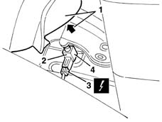

5550D18 handbrake on warning light switch - r+r
- Path
- Procedures > 55 ELECTRICAL EQUIPMENT > 5550 MANOEUVRING AND WARNING SIGNALS > 5550D brake and reversing lights > 5550D18 handbrake on warning light switch - r+r
- Kind
- repair procedure (removal / refitting; the operation number is the code)
- Applies to
- all engines; all production periods
- Interactive page
- https://sloeber94.github.io/elrnDB-lYpsln/en/#/2429433
Applies to: all engines; all production periods
 Removing
Removing
 Refitting
Refitting7040L28 tunnel switch panel - r r
7040L22 REAR TRIM on TUNNEL -R.R.
1. Raise the edge of the handbrake lever gaiter.
2. Move the switch after releasing the retainer.
3. Disconnect the electrical connection.
 | Name | Connector |
|---|---|---|
3 | Handbrake switch |
4. Recover the switch.

Applies to: all engines; all production periods
Refitting
RemovingCheck that the switch is not damaged and, if necessary, conduct an electrical test on it.
Connect the electrical connection to the switch.
Position the switch and do up the retainer.
Position the handbrake lever gaiter.
Check the operation of the handbrake warning light.
Topics linked from this page (4)
- 7040L20 tunnel trim - r r
- 7040L22 REAR TRIM on TUNNEL -R.R.
- 7040L28 tunnel switch panel - r r
- I40 Handbrake switch ( REAR )